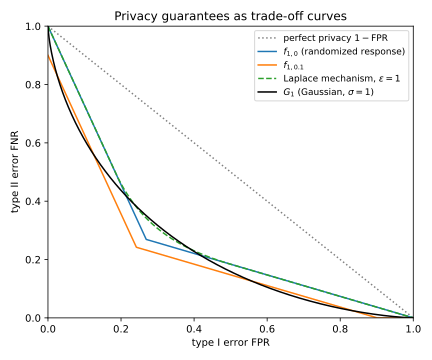
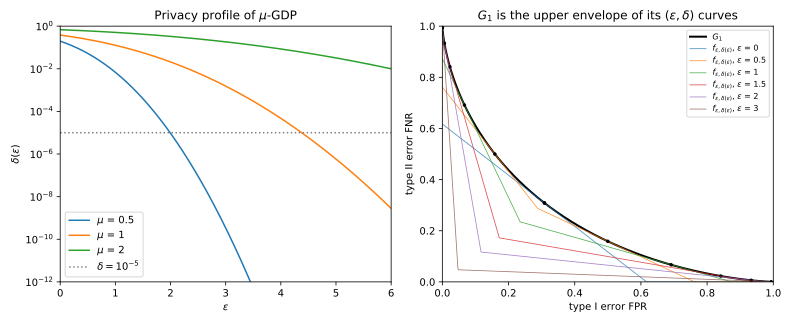
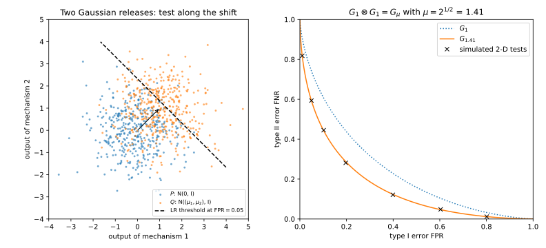
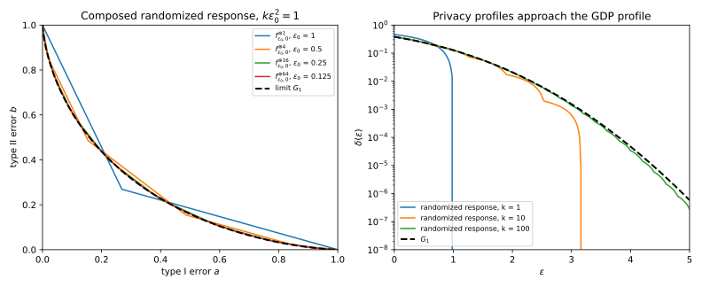
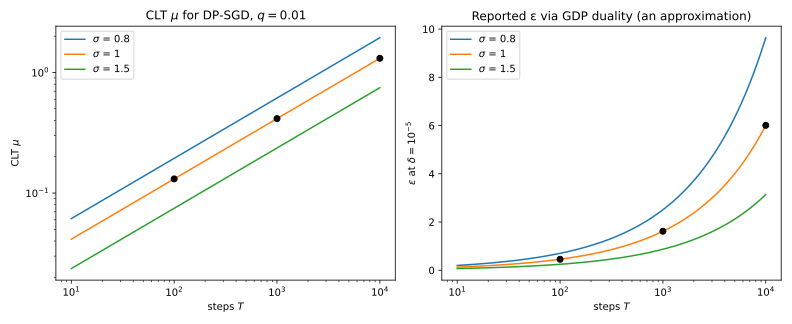
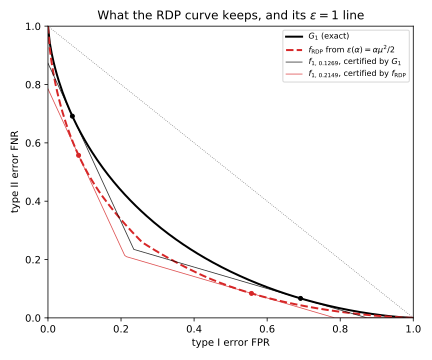

32 f-DP and Gaussian differential privacy
32.1 Why this matters
Every privacy definition in this part answers the same question: how well can an adversary who sees the output of a mechanism \(M\) tell whether it ran on a dataset \(D\) or on a neighbour \(D'\) that differs from it in one record? Differential privacy (DP) in its \((\varepsilon, \delta)\) form answers with two numbers. Rényi differential privacy (RDP) answers with a curve over orders \(\alpha\) (Rényi DP), and concentrated DP with one number \(\rho\) (concentrated DP). But Part 1 already gave the complete answer to “how well can anyone tell \(P\) from \(Q\)”. It is the trade-off function \(T(P, Q)\): for each rate at which a test may wrongly reject \(P\) (its type I error), the smallest rate at which it can wrongly accept \(P\) when the truth is \(Q\) (its type II error) (Hypothesis testing, Section 4.5). This chapter makes that curve the privacy guarantee itself.
The organizing idea: the most informative description of a mechanism’s privacy is its whole trade-off curve between \(M(D)\) and \(M(D')\), and every other notion is a lossy summary of it. An \((\varepsilon, \delta)\) pair is one straight line lying under the curve, an RDP curve is a set of moments of it, and both throw information away. Two facts make the curve practical rather than just complete. First, Gaussian mechanisms give a one-parameter family of curves \(G_\mu\) that is closed under composition: running a mechanism with curve \(G_{\mu_1}\) and then one with curve \(G_{\mu_2}\) gives the curve \(G_{\sqrt{\mu_1^2 + \mu_2^2}}\). Second, a central limit theorem (CLT) says that composing many mechanisms, each of which leaks little, gives a curve close to some \(G_\mu\), whatever the mechanisms were. Table 32.1 lists the results.
| Result | Where it is used |
|---|---|
| \(f\)-DP and the curve \(f_{\varepsilon,\delta}\) | Reading any \((\varepsilon, \delta)\) guarantee as a bound on every attacker’s errors |
| \(\mu\)-Gaussian differential privacy (GDP); the Gaussian mechanism is \(1/\sigma\)-GDP | A one-number guarantee that is exact for Gaussian noise |
| Duality: \(\delta(\varepsilon) = 1 + f^*(-e^\varepsilon)\); the GDP privacy profile | Reporting a GDP guarantee as \((\varepsilon, \delta)\) without loss |
| Composition: \(G_{\mu_1} \otimes G_{\mu_2} = G_{\sqrt{\mu_1^2 + \mu_2^2}}\); the tensor product | Exact accounting for full-batch noisy gradient descent; what numerical accountants compute |
| CLT for composition | Approximating many small mechanisms by one \(G_\mu\) |
| Subsampled Gaussian CLT, \(\mu = q\sqrt{k(e^{1/\sigma^2} - 1)}\) | A quick, approximate \(\varepsilon\) for differentially private stochastic gradient descent (SGD), DP-SGD for short |
| RDP as a lossy summary of the curve | Why RDP accounting leaves slack, and how much |
A clash of letters. The \(f\)-DP papers write \(\alpha\) for the type I error and \(\beta\) for the type II error, as Part 1 does. In this part \(\alpha\) is the Rényi order. So this chapter writes \(a\) for the type I error and \(b\) for the type II error of a test, and keeps \(\alpha\) for Rényi orders only.
Notation. Throughout, \(P = M(D)\) and \(Q = M(D')\) are the two output distributions, with densities \(p\) and \(q\). The one exception is Section 32.8, where \(q\) is a sampling rate and the densities are written \(P(y)\) and \(Q(y)\). A test \(\phi\) looks at the output \(y\) and “fires”, deciding that the data was \(D'\), with probability \(\phi(y)\). Its type I error is how often it fires when the data was \(D\), \(a = \mathbb E_P[\phi]\), and its type II error is how often it stays silent when the data was \(D'\), \(b = 1 - \mathbb E_Q[\phi]\). The privacy loss of an output \(y\) is the log of how much more likely \(y\) is under \(D\) than under \(D'\), \(L(y) = \ln\frac{p(y)}{q(y)}\). Drawing the output from \(P\) makes it random: \(L(Y)\) with \(Y \sim P\) is the privacy loss random variable (PRV) (composition).
32.2 Toolkit: three facts every derivation uses
32.2.1 Fact 1 — The curve is fixed by the law of the privacy loss
The trade-off curve is about the best tests, and the best tests only ever look at the privacy loss. The Neyman–Pearson lemma of Part 1 says that, at any type I error, the test with the smallest type II error fires on the outputs that are most typical of \(Q\) relative to \(P\), that is, where the likelihood ratio \(q/p\) is largest. Since \(q/p = e^{-L}\), these are the outputs where the privacy loss \(L\) is smallest. So every optimal test has the form “fire when \(L < l\)” (with a coin flip at \(L = l\) when \(L\) has an atom there), and its errors are the probabilities of the event \(\{L < l\}\) under \(P\) and under \(Q\). The curve \(T(P, Q)\) therefore depends on the pair only through the law of \(L\) under \(P\) and under \(Q\).
Those two laws are not independent of each other. To get a probability under \(Q\) from one under \(P\), weight each output by \(q/p = e^{-L}\). This is Part 1’s change of measure (Fact 2 of Hypothesis testing, where \(L\) names the ratio \(q/p\); here that ratio is \(e^{-L}\)): for any event \(A\) defined through \(L\), \[Q(A) = \mathbb E_P[e^{-L}\mathbf 1_A], \tag{32.1}\] when \(Q\) puts no mass where \(p = 0\). The reason is one line: \(\mathbb E_P[e^{-L}\mathbf 1_A] = \int_A p\cdot\frac{q}{p} = \int_A q\). So the law of the PRV under \(P\) alone fixes the curve.
The Gaussian pair shows this at work. Take \(P = \mathcal N(0, 1)\) and \(Q = \mathcal N(\mu, 1)\), a unit-variance normal and the same normal shifted by \(\mu\). Taking the log of the ratio of the two densities, the \(y^2\) terms cancel and \[L(y) = \ln\frac{p(y)}{q(y)} = -\frac{y^2}{2} + \frac{(y - \mu)^2}{2} = \frac{\mu^2}{2} - \mu y. \tag{32.2}\] The loss is a linear function of a normal output, so it is normal. Under \(P\), \(y\) has mean 0 and variance 1, so \(L \sim \mathcal N(\frac{\mu^2}{2}, \mu^2)\). Under \(Q\), \(y\) has mean \(\mu\), so \(L \sim \mathcal N(\frac{\mu^2}{2} - \mu^2, \mu^2) = \mathcal N(-\frac{\mu^2}{2}, \mu^2)\). The change of measure with \(A\) = everything says \(\mathbb E_P[e^{-L}]\) should be \(Q(\text{everything}) = 1\). The moment generating function of a normal, \(\mathbb E[e^{tX}] = e^{tm + t^2v/2}\) for \(X \sim \mathcal N(m, v)\), with \(t = -1\), gives \(\mathbb E_P[e^{-L}] = e^{-\mu^2/2 + \mu^2/2} = 1\), as it must.
One consequence is used several times below: the slope of the curve is set by the loss at the threshold. Part 1 showed \(T'(a) = -q/p\) at the threshold of the test of size \(a\). The reason is that moving the threshold to include one more sliver of outputs near \(y\) raises the type I error by \(p(y)\,dy\) and lowers the type II error by \(q(y)\,dy\), so \(b\) changes by \(-q/p\) per unit of \(a\). In terms of the loss, this is the slope rule \[|T'(a)| = e^{-l(a)}, \tag{32.3}\] where \(l(a)\) is the threshold of the size-\(a\) test, the \(a\)-quantile of \(L\) under \(P\) (the test fires when \(L < l(a)\), which happens with probability \(a\) under \(P\)).
32.2.2 Fact 2 — The best “gain” of a test is a hockey-stick divergence
Suppose each correct detection of \(D'\) earns one unit and each false alarm costs \(\gamma\) units. A test’s net gain is then its power \(1 - b\) minus \(\gamma a\). The best gain over all tests is a divergence between \(P\) and \(Q\) that the book has already met: the hockey-stick divergence \(E_\gamma(Q\|P) = \sup_S\big(Q(S) - \gamma P(S)\big)\), the largest amount by which some event is more likely under \(Q\) than \(\gamma\) times its probability under \(P\) (Divergences). For any pair and any \(\gamma \ge 0\), \[\max_{a \in [0, 1]}\big(1 - T(P, Q)(a) - \gamma a\big) = \sup_S\big(Q(S) - \gamma P(S)\big) = E_\gamma(Q\|P). \tag{32.4}\]
To see why, write the gain of a test \(\phi\) as one integral: \(1 - b - \gamma a = \mathbb E_Q\phi - \gamma\mathbb E_P\phi = \int\phi\,(q - \gamma p)\). The integrand is positive exactly where \(q > \gamma p\), so the gain is largest when the test fires on those outputs and nowhere else, \(\phi = \mathbf 1[q > \gamma p]\). That test is the event \(S = \{q > \gamma p\}\), and its gain is \(\int(q - \gamma p)_+ = E_\gamma(Q\|P)\). The left side of Equation 32.4 reaches the same number in two stages: at each type I error \(a\) the largest power is \(1 - T(a)\) by the definition of \(T\), and maximizing over \(a\) then picks the best test overall.
At \(\gamma = 1\) the gain is \(1 - a - b\), the test’s advantage, and \(E_1(Q\|P)\) is the total variation (TV) distance. So Fact 2 contains Part 1’s statement that the best advantage of any test is the TV distance.
32.2.3 Fact 3 — A Gaussian shift in \(d\) dimensions is a Gaussian shift in one
When the output is a vector with independent unit-variance Gaussian noise, only the direction of the shift between the two means carries evidence; the noise in every perpendicular direction is the same under both hypotheses. So the \(d\)-dimensional problem is a one-dimensional one with shift equal to the length of the mean difference. For \(m \in \mathbb R^d\), \[T\big(\mathcal N(0, I_d), \mathcal N(m, I_d)\big) = G_{\|m\|_2}, \qquad G_\mu(a) = \Phi\big(\Phi^{-1}(1 - a) - \mu\big). \tag{32.5}\] Here \(\Phi\) is the standard normal distribution function, \(\Phi(t) = \Pr[Z \le t]\) for \(Z \sim \mathcal N(0, 1)\), and \(\Phi^{-1}\) its inverse.
Start with \(d = 1\), which is Part 1’s Gaussian trade-off curve (Equation 4.10). For \(\mathcal N(0, 1)\) against \(\mathcal N(\mu, 1)\) the loss \(\frac{\mu^2}{2} - \mu y\) is small when \(y\) is large, so the best test fires when \(y > t\). Its type I error is \(a = \Pr[Z > t] = 1 - \Phi(t)\), so the threshold of the size-\(a\) test is \(t = \Phi^{-1}(1 - a)\). Its type II error is the chance that a draw from \(\mathcal N(\mu, 1)\) stays below \(t\), \(b = \Phi(t - \mu)\). Substituting \(t\) gives \(G_\mu\).
For general \(d\), the likelihood ratio is \(\exp\big(\langle m, y\rangle - \frac12\|m\|^2\big)\), from the same cancellation of squares as in Fact 1. It depends on \(y\) only through the single number \(s = \langle m, y\rangle/\|m\|\), the length of the projection of \(y\) on the direction of the shift. By Neyman–Pearson, the optimal tests are thresholds on \(s\). Under \(\mathcal N(0, I)\), \(s \sim \mathcal N(0, 1)\); under \(\mathcal N(m, I)\), \(s \sim \mathcal N(\|m\|, 1)\). Both hold because the inner product of a unit vector with a standard normal vector is a standard normal number (its variance is the squared length of the unit vector, 1), and the mean \(m\) contributes \(\langle m, m\rangle/\|m\| = \|m\|\). So every optimal test is a threshold test on \(\mathcal N(0, 1)\) against \(\mathcal N(\|m\|, 1)\), whose curve is \(G_{\|m\|}\).
Figure 32.3 (left) shows the picture: 400 draws from each of \(\mathcal N(0, I_2)\) and \(\mathcal N((1, 1), I_2)\). The best boundary is the dashed line perpendicular to the shift. Nothing about the other direction helps.
32.3 f-DP
32.3.1 Context
A definition of privacy should say what an adversary cannot do. In hypothesis-testing terms the strongest such statement is a lower bound on the adversary’s type II error at every type I error: however the adversary tunes its test, it must miss at least this often. That bound is a curve, so the definition takes a curve as its parameter.
32.3.2 Statement
Call \(f\) a trade-off function if it is the curve of some pair of distributions. Part 1 (Section 4.5) showed this means \(f\) is non-increasing, convex, continuous and satisfies \(f(a) \le 1 - a\) (a coin flip that fires with probability \(a\) already achieves \(b = 1 - a\)). Conversely, every such \(f\) is the curve of some pair, its canonical pair (Part 1; Section K.1 in the appendices derives it step by step). A mechanism \(M\) is \(f\)-differentially private (\(f\)-DP) if no neighbouring pair is easier to tell apart than \(f\) allows, \[T\big(M(D), M(D')\big) \ge f \quad\text{for all neighbours } D \simeq D' \tag{32.6}\] (Dong, Roth & Su 2022, Definition 2.3; cited as Dong et al. from here on).
Two consequences follow. Because the neighbouring relation is symmetric, an \(f\)-DP mechanism is also \(\max(f, f^{-1})\)-DP, where \(f^{-1}(a) = \inf\{t \in [0, 1] : f(t) \le a\}\) is the inverse of \(f\), its graph reflected across the diagonal \(a = b\) (Dong et al., Proposition 2.4). A curve with \(f = f^{-1}\) is called symmetric. And the old definition is a special case: \((\varepsilon, \delta)\)-DP is exactly \(f_{\varepsilon,\delta}\)-DP for the curve made of two straight lines, \[f_{\varepsilon,\delta}(a) = \max\big(0,\; 1 - \delta - e^\varepsilon a,\; e^{-\varepsilon}(1 - \delta - a)\big), \tag{32.7}\] the curve that Part 3 derived in Section 18.7 (Equation 18.14; Wasserman & Zhou 2010; Kairouz, Oh & Viswanath 2015; Dong et al., Proposition 2.5).
32.3.3 Derivation
- Swap the roles, then invert. Since \(D' \simeq D\) is also a neighbouring pair, \(f\)-DP gives \(T(M(D'), M(D)) \ge f\) as well. Now relate the curve of \((Q, P)\) to the curve of \((P, Q)\). Take a test \(\phi\) of \(P\) against \(Q\) with errors \((a, b)\) and use its opposite, \(1 - \phi\), as a test of \(Q\) against \(P\): it fires when the data was \(D'\) exactly when \(\phi\) stays silent, so its type I error is \(\mathbb E_Q[1 - \phi] = b\) and its type II error is \(1 - \mathbb E_P[1 - \phi] = a\). So the achievable error pairs of \((Q, P)\) are those of \((P, Q)\) with the coordinates swapped, and \(T(Q, P)\) is the inverse function of \(T(P, Q)\), in the generalized sense of \(f^{-1}\) above when the curve has flat stretches. Part 1 proves this as Exercise 2 of Hypothesis testing.
- Reflecting keeps the order. A curve lying above \(f\) means its region of achievable errors sits inside the region above \(f\). Reflecting both regions across the diagonal keeps that inclusion, so \(T(M(D'), M(D)) \ge f\) turns into \(T(M(D), M(D')) \ge f^{-1}\). Together with \(T(M(D), M(D')) \ge f\) this gives \(\ge \max(f, f^{-1})\). The maximum of two convex, non-increasing functions is again convex and non-increasing, so this is a trade-off function.
- \((\varepsilon, \delta)\)-DP is a curve. This is Part 3’s hypothesis-testing reading (Section 18.7), restated in this chapter’s letters. \((\varepsilon, \delta)\)-DP says that for every event \(S\), \(Q(S) \le e^\varepsilon P(S) + \delta\) and \(P(S) \le e^\varepsilon Q(S) + \delta\). Read \(S\) as the region where a test fires, so \(a = P(S)\) and \(1 - b = Q(S)\). The first inequality becomes \(1 - b \le e^\varepsilon a + \delta\), that is \(b \ge 1 - \delta - e^\varepsilon a\). The second, applied to the complement of \(S\), where \(P = 1 - a\) and \(Q = b\), becomes \(1 - a \le e^\varepsilon b + \delta\), that is \(b \ge e^{-\varepsilon}(1 - \delta - a)\). Together with \(b \ge 0\) these are the three pieces of Equation 32.7. A randomized test is a mixture of such region tests, so its errors obey the same linear bounds. Conversely, if every test has \(b \ge f_{\varepsilon,\delta}(a)\), then reading each event \(S\) as a test gives back the two DP inequalities. So \(T(P, Q) \ge f_{\varepsilon,\delta}\) for every neighbouring pair exactly when \(M\) is \((\varepsilon, \delta)\)-DP.
32.3.4 Interpretation
\(f\)-DP contains \((\varepsilon, \delta)\)-DP: with \(f = f_{\varepsilon,\delta}\) you get back the old definition, and other curves express guarantees that no single \((\varepsilon, \delta)\) pair can.
The shape of \(f_{\varepsilon,\delta}\) shows what the two parameters do. It has two straight pieces, with slopes \(-e^\varepsilon\) and \(-e^{-\varepsilon}\). They meet on the diagonal \(a = b\): setting \(a = 1 - \delta - e^\varepsilon a\) gives \(a = \frac{1 - \delta}{1 + e^\varepsilon}\). The curve starts at \(1 - \delta\) on the \(b\)-axis, not at 1. That gap is what \(\delta\) means: a test may catch \(D'\) with probability \(\delta\) at no type I cost.
Post-processing comes for free. Processing the outputs can only make two distributions harder to tell apart, because any test on the processed output is also a test on the raw output, so the trade-off curve can only rise under processing (Part 3, Section 19.3; Dong et al., Lemma 2.9). So \(f\)-DP is closed under post-processing.
The curve is also the most informative summary there is. Blackwell’s theorem (Dong et al., Theorem 2.10) says that \(T(P, Q) \le T(P', Q')\) holds exactly when some randomized map sends \(P\) to \(P'\) and \(Q\) to \(Q'\) at the same time. So comparing curves is the same as asking whether one pair can be turned into the other by post-processing. Any quantity that respects post-processing, such as a divergence, can therefore only be a coarsening of the curve.
32.3.5 Example: three mechanisms with “\(\varepsilon = 1\)”
Binary randomized response with \(\varepsilon = 1\) reports the true bit with probability \(e/(1 + e) = 0.7311\) and flips it otherwise (randomized response; as a mechanism it protects one person’s bit under replace-one neighbours, and here it serves as a pair of distributions). If the bit is 0 under \(D\) and 1 under \(D'\), the output distributions are \(P = (0.7311, 0.2689)\) and \(Q = (0.2689, 0.7311)\) over the outputs (0, 1). The only useful test is “fire when the output is 1”, with \(a = 0.2689\) and \(b = 0.2689\); mixing it with “never fire” and “always fire” fills in the straight lines to \((0, 1)\) and \((1, 0)\). So the curve has a single interior corner at \((0.2689, 0.2689)\). That is exactly \(f_{1,0}\), whose corner is at \(1/(1 + e) = 0.2689\) by the formula \(\frac{1 - \delta}{1 + e^\varepsilon}\) above. The Laplace mechanism with sensitivity 1 and scale \(1/\varepsilon\) is also \((1, 0)\)-DP, and the Gaussian mechanism with \(\sigma = 1\) is shown for comparison.
| Type I error \(a\) | \(f_{1,0}\) (randomized response) | Laplace, \(\varepsilon = 1\) | Gaussian, \(\sigma = 1\) (\(G_1\)) |
|---|---|---|---|
| 0.01 | 0.9728 | 0.9728 | 0.9076 |
| 0.1 | 0.7282 | 0.7282 | 0.6109 |
| 0.25 | 0.3204 | 0.3679 | 0.3724 |
The \(f_{1,0}\) column is the first line \(1 - e\,a\): at \(a = 0.1\), \(1 - 0.2718 = 0.7282\). Randomized response sits exactly on \(f_{1,0}\): it is the worst \((1, 0)\)-DP mechanism. The Laplace mechanism matches it at small \(a\), where both have slope \(-e\), but is strictly more private in the middle (0.3679 against 0.3204 at \(a = 0.25\), Table 32.2). The label “\((1, 0)\)-DP” cannot tell the two apart; their curves can. Figure 32.1 also shows \(f_{1, 0.1}\), which starts at \(b = 0.9\) instead of 1: at \(a = 0.1\) it allows \(b = 0.9 - 0.2718 = 0.6282\), exactly \(\delta = 0.1\) below \(f_{1,0}\).

32.3.6 Check yourself
- Why must \(f_{\varepsilon,\delta}\) be symmetric, \(f_{\varepsilon,\delta} = f_{\varepsilon,\delta}^{-1}\)? (Its two pieces are reflections of each other across the diagonal: solving \(b = 1 - \delta - e^\varepsilon a\) for \(a\) gives \(a = e^{-\varepsilon}(1 - \delta - b)\), which is the second piece with \(a\) and \(b\) swapped. This mirrors the two DP inequalities, one for each order of \(D, D'\).)
- The Laplace curve in Table 32.2 coincides with \(f_{1,0}\) for small \(a\) and lies above it in the middle. Is \(\varepsilon = 1\) the smallest \(\varepsilon\) with \(\delta = 0\) it satisfies? (Yes. Near \(a = 0\) both curves are \(1 - e\,a\), and any \(f_{\varepsilon,0}\) with \(\varepsilon < 1\) is \(1 - e^\varepsilon a\) there, which lies above the Laplace curve.)
32.4 Gaussian differential privacy
32.4.1 Context
The Gaussian mechanism is the workhorse of private machine learning. By Fact 3, its curve is a Gaussian trade-off curve \(G_\mu\), which has one parameter. Using that family as the yardstick gives a one-number definition that is exact for the Gaussian mechanism.
32.4.2 Statement
A mechanism is \(\mu\)-GDP if it is \(G_\mu\)-DP, with \(G_\mu\) as in Equation 32.5 (Dong et al., Definition 2.6): no test can separate its neighbouring outputs better than one can separate \(\mathcal N(0, 1)\) from \(\mathcal N(\mu, 1)\). The Gaussian mechanism adds noise to a query \(g\), \(M(D) = g(D) + \mathcal N(0, \sigma^2\Delta_2^2 I)\), where \(\Delta_2\) is the \(\ell_2\) sensitivity of \(g\) (the largest Euclidean distance \(\|g(D) - g(D')\|_2\) over neighbours) and \(\sigma\) the noise multiplier (the noise standard deviation in units of \(\Delta_2\)). It is \[\mu\text{-GDP with } \mu = \frac{1}{\sigma}, \tag{32.8}\] and this is tight: when the sensitivity is attained by some neighbouring pair, that pair has trade-off curve exactly \(G_{1/\sigma}\). \(\mu\)-GDP is closed under post-processing.
32.4.3 Derivation
The plan is to turn the two output distributions, by invertible maps that cannot change any test’s errors, into the standard pair of Fact 3, and then read off the shift.
- Standardize. Divide the output by \(\sigma\Delta_2\). The map is invertible, so any test on the scaled output is a test on the original and vice versa, and no error changes. After it, the noise has identity covariance: \(P = \mathcal N(g(D)/(\sigma\Delta_2), I)\) and \(Q = \mathcal N(g(D')/(\sigma\Delta_2), I)\).
- Reduce to one dimension. Subtract \(g(D)/(\sigma\Delta_2)\) from both, another invertible map, so that \(P\) is centred at 0. Fact 3 then gives \(T(P, Q) = G_\nu\) with \(\nu = \|g(D) - g(D')\|_2/(\sigma\Delta_2)\), the length of the remaining shift.
- Bound the shift. By the definition of sensitivity, \(\|g(D) - g(D')\|_2 \le \Delta_2\), so \(\nu \le 1/\sigma\).
- A bigger shift is easier to detect. \(G_\mu(a) = \Phi(\Phi^{-1}(1 - a) - \mu)\) decreases as \(\mu\) grows, because \(\Phi\) is increasing. So \(G_\nu \ge G_{1/\sigma}\) for every neighbouring pair, which is the statement that the mechanism is \(1/\sigma\)-GDP. A pair with \(\|g(D) - g(D')\|_2 = \Delta_2\) has \(\nu = 1/\sigma\) and gives equality.
- Post-processing. It is the special case \(f = G_\mu\) of the post-processing property of \(f\)-DP in Section 32.3.
32.4.4 Interpretation
For the Gaussian mechanism, \(\mu\)-GDP is not a bound with slack; it is the curve. Every other guarantee for this mechanism, in particular every \((\varepsilon, \delta)\) pair, follows from \(\mu\) (Section 32.5).
\(\mu\) has a direct reading: it is the distance between the two output means in units of the noise standard deviation. Part 1’s Table 4.4 gives a feel for it. At a 5% false-alarm rate the threshold is \(\Phi^{-1}(0.95) = 1.6449\), so at \(\mu = 1\) the best test misses with probability \(\Phi(1.6449 - 1) = 0.7405\) and has power \(1 - 0.7405 = 0.2595\); at \(\mu = 2\) it misses with probability \(\Phi(-0.3551) = 0.3612\) and has power 0.6388. Dong et al. suggest that \(\mu \le 0.5\) is a reasonable guarantee and \(\mu \ge 6\) promises almost nothing (their discussion of Figure 3, after Definition 2.6).
The guarantee is set by the worst pair. A pair whose outputs differ by half the sensitivity has curve \(G_{0.5}\) at \(\sigma = 1\), more private than the guarantee \(G_1\), which comes from the pairs that attain the full sensitivity.
32.4.5 Example: one noisy query
A count query has \(\Delta_2 = 1\), since adding or removing one record changes the count by 1. Released with \(\sigma = 1\), it is 1-GDP; with \(\sigma = 4\), it is 0.25-GDP. For \(\sigma = 1\), Table 32.3 evaluates \(G_1\) at three type I errors, each by setting the threshold \(\Phi^{-1}(1 - a)\) and subtracting the shift 1. For example, at \(a = 0.01\) the threshold is \(\Phi^{-1}(0.99) = 2.3263\) and \(G_1(0.01) = \Phi(1.3263) = 0.9076\).
| Type I error \(a\) | Smallest type II error \(G_1(a)\) | Best power \(1 - G_1(a)\) |
|---|---|---|
| 0.01 | 0.9076 | 0.0924 |
| 0.05 | 0.7405 | 0.2595 |
| 0.1 | 0.6109 | 0.3891 |
A simulation of the threshold test at \(a = 0.05\) with 1,000,000 draws per hypothesis gives \(\hat a = 0.0502\) and \(\hat b = 0.7408\), against the exact 0.7405 in Table 32.3. Read as a membership attack, the first row says: whatever the attacker knows about the rest of the data, at a 1% false-positive rate it detects the presence of a record at most 9.24% of the time.
32.4.6 Check yourself
- A query has \(\ell_2\) sensitivity 3 and you add \(\mathcal N(0, 6^2 I)\). What is \(\mu\)? (The noise multiplier is the noise standard deviation in units of the sensitivity, \(\sigma = 6/3 = 2\), so \(\mu = 1/\sigma = 0.5\).)
- Why is it enough to look at the one-dimensional statistic \(\langle m, y\rangle/\|m\|\) when the query returns a vector? (Fact 3: the likelihood ratio depends on \(y\) only through it, so by Neyman–Pearson no test can do better than thresholding it.)
32.5 Duality with (ε, δ)
32.5.1 Context
Regulators, papers and libraries report \((\varepsilon, \delta)\). So you need to turn a curve into \((\varepsilon, \delta)\) pairs without losing anything, and you need the \((\varepsilon, \delta)\) profile of \(\mu\)-GDP in closed form.
32.5.2 Statement
The idea is geometric. An \((\varepsilon, \delta)\) guarantee is the line \(b = 1 - \delta - e^\varepsilon a\) (and its mirror image), and a curve satisfies it when the curve lies above the line. For a given slope \(-e^\varepsilon\), the smallest \(\delta\) that works is the one where the line just touches the curve. Doing this for every slope gives the function \(\delta(\varepsilon)\), and since a convex curve is the upper envelope of the lines that touch it, these lines together carry all of the curve.
The tool that computes “the line of slope \(y\) that just touches \(f\)” is the convex conjugate \(f^*(y) = \sup_{a}\big(ya - f(a)\big)\): for each slope \(y\) it gives (minus) the intercept of the touching line. In these terms: for a symmetric trade-off function \(f\), a mechanism is \(f\)-DP if and only if it is \((\varepsilon, \delta(\varepsilon))\)-DP for every \(\varepsilon \ge 0\), with \[\delta(\varepsilon) = 1 + f^*(-e^\varepsilon), \qquad f^*(y) = \sup_{a \in [0, 1]}\big(ya - f(a)\big), \tag{32.9}\] (Dong et al., Proposition 2.12). For \(f = G_\mu\) the touching point can be found in closed form, and \[\delta(\varepsilon) = \Phi\Big(-\frac{\varepsilon}{\mu} + \frac{\mu}{2}\Big) - e^\varepsilon\,\Phi\Big(-\frac{\varepsilon}{\mu} - \frac{\mu}{2}\Big) \tag{32.10}\] (Dong et al., Corollary 2.13). This is the exact privacy profile of the Gaussian mechanism, the same formula that Part 3 derived as a hockey-stick divergence (Equation 20.17 in Section 20.6; Balle & Wang 2018, Theorem 8). Here it comes out of the curve by convex duality. Section D.5 in the appendices derives \(G_\mu\) and this profile together from the threshold test, in plain steps.
32.5.3 Derivation of the duality
- One \((\varepsilon, \delta)\) pair is one line. By Equation 32.7, \(f \ge f_{\varepsilon,\delta}\) requires in particular \(f(a) \ge 1 - \delta - e^\varepsilon a\) for all \(a\). Rearranged, \(\delta \ge 1 - f(a) - e^\varepsilon a\) for every \(a\), so the smallest \(\delta\) that works is \(\sup_a\big(1 - f(a) - e^\varepsilon a\big)\). With \(y = -e^\varepsilon\) in the definition of the conjugate, this is \(1 + f^*(-e^\varepsilon)\), the quantity in Equation 32.9. The other piece of \(f_{\varepsilon,\delta}\) is the mirror image of this line across the diagonal, and \(f\) is its own mirror image (it is symmetric), so the other piece gives the same condition.
- So \(f\)-DP implies every \((\varepsilon, \delta(\varepsilon))\). If \(T(M(D), M(D')) \ge f\) and, by step 1 with the smallest \(\delta\), \(f \ge f_{\varepsilon,\delta(\varepsilon)}\), then \(T(M(D), M(D')) \ge f_{\varepsilon,\delta(\varepsilon)}\).
- Conversely, the lines rebuild the curve. A convex function is the supremum of the lines that touch it from below. For each \(\varepsilon \ge 0\) the line \(1 - \delta(\varepsilon) - e^\varepsilon a\) touches \(f\) where the slope of \(f\) is \(-e^\varepsilon\). As \(\varepsilon\) runs over \([0, \infty)\) the slopes run over every value from \(-1\) down, which covers the part of the curve left of the diagonal (a symmetric curve has slope \(-1\) where it crosses the diagonal and is steeper to the left). The mirror pieces cover the rest by symmetry. So \(\sup_{\varepsilon \ge 0} f_{\varepsilon,\delta(\varepsilon)} = f\), and a mechanism that is \((\varepsilon, \delta(\varepsilon))\)-DP for all \(\varepsilon\) has \(T \ge f_{\varepsilon,\delta(\varepsilon)}\) for every \(\varepsilon\), hence \(T \ge f\) (Dong et al., Proposition 2.11).
- The conjugate is a hockey-stick divergence. When \(f = T(P, Q)\), Fact 2 (Equation 32.4) with \(\gamma = e^\varepsilon\) says \(1 + f^*(-e^\varepsilon) = \max_a(1 - f(a) - e^\varepsilon a) = E_{e^\varepsilon}(Q\|P)\). So \(\delta(\varepsilon)\) is the familiar privacy profile \(\delta(\varepsilon) = E_{e^\varepsilon}\) of composition, the smallest \(\delta\) that goes with each \(\varepsilon\). For a symmetric pair the two orders, \(E_{e^\varepsilon}(Q\|P)\) and \(E_{e^\varepsilon}(P\|Q)\), agree.
32.5.4 Derivation of the Gaussian profile through the conjugate
To evaluate \(1 + G_\mu^*(-e^\varepsilon) = \max_a\big(1 - G_\mu(a) - e^\varepsilon a\big)\), find the test where the curve has slope \(-e^\varepsilon\), then read off its two errors.
- Find the touching point. The expression \(1 - G_\mu(a) - e^\varepsilon a\) is concave in \(a\), because \(G_\mu\) is convex, so its maximum is where its derivative vanishes, \(G_\mu'(a) = -e^\varepsilon\). By the slope rule (Fact 1), the slope at the size-\(a\) threshold \(t = \Phi^{-1}(1 - a)\) is minus the likelihood ratio there. For \(\mathcal N(0, 1)\) against \(\mathcal N(\mu, 1)\) that ratio is \(q(t)/p(t) = e^{\mu t - \mu^2/2}\). Setting it equal to \(e^\varepsilon\) gives \(\mu t - \mu^2/2 = \varepsilon\), so \(t = \frac{\varepsilon}{\mu} + \frac{\mu}{2}\).
- Read off the errors. The test fires when \(y > t\). Its type I error is \(a^* = 1 - \Phi(t) = \Phi\big(-\frac{\varepsilon}{\mu} - \frac{\mu}{2}\big)\), using \(1 - \Phi(t) = \Phi(-t)\). Its power is the chance a draw from \(\mathcal N(\mu, 1)\) exceeds \(t\), \(1 - b^* = 1 - \Phi(t - \mu) = \Phi\big(-\frac{\varepsilon}{\mu} + \frac{\mu}{2}\big)\).
- Substitute into \(\delta = 1 - b^* - e^\varepsilon a^*\) to get Equation 32.10.
- Agreement with Part 3. By Fact 2 this route computes \(E_{e^\varepsilon}(Q\|P)\). Part 3 instead computed \(E_{e^\varepsilon}(P\|Q) = P[L > \varepsilon] - e^\varepsilon Q[L > \varepsilon]\) from the Gaussian law of the loss (Fact 1: \(L \sim \mathcal N(\frac{\mu^2}{2}, \mu^2)\) under \(P\) and \(\mathcal N(-\frac{\mu^2}{2}, \mu^2)\) under \(Q\)). The two agree because the Gaussian pair is symmetric: reflecting the line \(y \mapsto \mu - y\) swaps \(\mathcal N(0, 1)\) and \(\mathcal N(\mu, 1)\), so swapping \(P\) and \(Q\) changes nothing.
32.5.5 Interpretation
The duality is lossless both ways. Reporting the whole profile \(\varepsilon \mapsto \delta(\varepsilon)\) loses nothing, because the lines rebuild the curve. Reporting one point, such as \(\varepsilon\) at \(\delta = 10^{-5}\), keeps one touching line and drops the rest of the curve (Figure 32.2, right).
At \(\varepsilon = 0\) the profile is the TV distance. The line of slope \(-1\) touches a symmetric curve on the diagonal, at the test with the best advantage \(1 - a - b\). For \(G_\mu\) that test has threshold \(t = \mu/2\), halfway between the means, and Equation 32.10 at \(\varepsilon = 0\) gives \(\delta(0) = \Phi(\mu/2) - \Phi(-\mu/2) = 2\Phi(\mu/2) - 1\), Part 1’s best advantage.
Small \(\delta\) costs \(\varepsilon\), in proportion to \(\mu\). To make \(\delta\) small, the first term of Equation 32.10, a Gaussian tail \(\Phi(-x)\) with \(x = \frac{\varepsilon}{\mu} - \frac{\mu}{2}\), must be small. A normal tail falls roughly like \(e^{-x^2/2}\), so reaching \(\delta\) needs \(x\) of about \(\sqrt{2\ln(1/\delta)}\), and \(\varepsilon\) grows roughly like \(\mu\sqrt{2\ln(1/\delta)}\). Each further factor of ten in \(\delta\) therefore costs extra \(\varepsilon\), a little less with each decade (a square root grows ever more slowly), and about \(\mu\) times as much as at \(\mu = 1\). At \(\mu = 1\), going from \(\delta = 10^{-4}\) to \(10^{-5}\) to \(10^{-6}\) raises \(\varepsilon\) from 3.8044 to 4.3772 to 4.8866 (steps of 0.57 and 0.51); at \(\mu = 2\), from 8.8769 to 9.9973 to 10.9972 (steps of 1.12 and 1.00, about twice as large). Figure 32.2 (left) and Table 32.4 show the same growth.
32.5.6 Example: reading \(\delta(1)\) of 1-GDP off the curve
At \(\mu = 1\) and \(\varepsilon = 1\) the touching threshold is \(t = \frac{1}{1} + \frac{1}{2} = 1.5000\). The best test where the slope is \(-e\) has type I error \(a^* = \Phi(-1.5) = 0.066807\) and power \(1 - b^* = \Phi(1 - 1.5) = \Phi(-0.5) = 0.308538\), so \(\delta(1) = 0.308538 - e \times 0.066807 = 0.308538 - 0.181601 = 0.126937\). These are the numbers of Part 3’s Table 20.6, read in a new way. There, 0.3085 was the probability of the bad event \(\{L > 1\}\), where the privacy loss exceeds \(\varepsilon\), and 0.1816 its correction. Here they are the power of the best test and the price of its type I error at the exchange rate \(e\). As a check on step 1, maximizing \(1 - G_1(a) - e\,a\) over a grid of 20,001 values of \(a\) gives the same 0.126937, at \(a = 0.0668\).
Going the other way, from a target \(\delta\) to \(\varepsilon\), has no closed form, but \(\delta(\varepsilon)\) decreases in \(\varepsilon\), so the function gdp_eps finds the \(\varepsilon\) where it equals the target by bisection. At \(\delta = 10^{-5}\):
| \(\mu\) | 0.5 | 1 | 2 |
|---|---|---|---|
| \(\varepsilon\) at \(\delta = 10^{-5}\) | 1.9931 | 4.3772 | 9.9973 |
To check step 3 of the duality, the script rebuilds \(G_1\) from 1001 lines \(f_{\varepsilon,\delta(\varepsilon)}\) with \(\varepsilon \in [0, 10]\): their supremum is within \(4.9\times10^{-6}\) of \(G_1\) on a grid of 999 values of \(a\).

32.5.7 Check yourself
- From Figure 32.2 (right), which part of \(G_1\) does the \(\varepsilon = 0\) line describe? (The point where the slope is \(-1\), on the diagonal at \(a = b = \Phi(-1/2) = 0.3085\): the best-advantage test. Larger \(\varepsilon\) describe points closer to the axes.)
- Is “1-GDP” the same guarantee as “\((4.3772, 10^{-5})\)-DP”? (No. 1-GDP implies it, but the single curve \(f_{4.3772, 10^{-5}}\) allows far more power: at \(a = 0.1\) its second piece allows \(b = e^{-4.3772}(1 - 10^{-5} - 0.1) = 0.0113\), while \(G_1(0.1) = 0.6109\).)
32.6 Composition
32.6.1 Context
Training runs a mechanism thousands of times on the same data. Composing \((\varepsilon, \delta)\) guarantees directly is lossy (composition). Composing curves is exact, and for Gaussian curves it is a one-line formula.
32.6.2 Statement
When an adversary sees the outputs of two mechanisms run with independent randomness, it faces the pair of joint distributions: \(P \times P'\) (both outputs drawn on \(D\)) against \(Q \times Q'\) (both drawn on \(D'\)). The curve of that joint pair defines the composition of curves. The tensor product of two trade-off functions \(f = T(P, Q)\) and \(g = T(P', Q')\) is \[f \otimes g = T(P \times P', Q \times Q'), \tag{32.11}\] the curve of the pair of product distributions. It does not depend on which pairs are used to represent \(f\) and \(g\) (Dong et al., Definition 3.1; Section K.2 in the appendices proves it). If each mechanism \(M_i\) is \(f_i\)-DP, even when it is chosen adaptively from earlier outputs, then the composition \((M_1, \dots, M_k)\) is \(f_1 \otimes \dots \otimes f_k\)-DP, and no better bound holds in general (Dong et al., Theorem 3.2). For Gaussian curves the product is again Gaussian, with the shifts adding like the sides of a right-angled triangle: \[G_{\mu_1} \otimes G_{\mu_2} \otimes \dots \otimes G_{\mu_k} = G_\mu, \qquad \mu = \sqrt{\mu_1^2 + \dots + \mu_k^2} \tag{32.12}\] (Dong et al., Corollary 3.3).
32.6.3 Derivation
- Non-adaptive composition through Blackwell. Suppose \(T(P_i, Q_i) \ge f_i = T(\tilde P_i, \tilde Q_i)\), where \((\tilde P_i, \tilde Q_i)\) is some pair whose curve is exactly \(f_i\). By Blackwell’s theorem (Dong et al., Theorem 2.10), a curve lies above another exactly when its pair can be produced from the other pair by post-processing, so some randomized map \(K_i\) sends \(\tilde P_i \mapsto P_i\) and \(\tilde Q_i \mapsto Q_i\). Apply the maps coordinatewise and independently: \((K_1, \dots, K_k)\) sends \(\prod\tilde P_i \mapsto \prod P_i\) and \(\prod\tilde Q_i \mapsto \prod Q_i\). Post-processing cannot help a test, so \(T(\prod P_i, \prod Q_i) \ge T(\prod\tilde P_i, \prod\tilde Q_i) = \bigotimes f_i\).
- Adaptive composition. When \(M_2\) depends on the output of \(M_1\), the second coordinate is not independent of the first, and step 1 does not apply. Dong et al. prove the same bound with the Neyman–Pearson lemma alone, conditioning on the first output (their Theorem 3.2 and Appendix C). Section K.2 in the appendices derives it step by step. On each branch of the first output, the attacker’s test is swapped for the best test of a fixed pair with curve \(f_2\) at the same type I error, which keeps the type I error and cannot raise the type II error.
- Tightness. If the mechanisms ignore each other’s outputs and some neighbouring pair attains each \(f_i\), the composed pair is exactly the product pair, so its curve is exactly \(\bigotimes f_i\).
- Gaussian curves. \(G_{\mu_i} = T(\mathcal N(0, 1), \mathcal N(\mu_i, 1))\), so \(\bigotimes G_{\mu_i}\) is the curve of \(k\) independent coordinates, \(T(\mathcal N(0, I_k), \mathcal N(m, I_k))\) with \(m = (\mu_1, \dots, \mu_k)\). By Fact 3, this is \(G_{\|m\|_2}\), and \(\|m\|_2 = \sqrt{\mu_1^2 + \dots + \mu_k^2}\), which is Equation 32.12.
32.6.4 Interpretation
Under composition, the quantity that adds up is \(\mu^2\), just as variances of independent noises add. With \(k\) identical steps, \(\mu\) grows like \(\sqrt k\). Full-batch noisy gradient descent with clipped gradients and noise multiplier \(\sigma\) for \(k\) steps is a composition of \(k\) Gaussian mechanisms, each \(1/\sigma\)-GDP, so it is \(\sqrt{k/\sigma^2} = \sqrt k/\sigma\)-GDP. By step 3 it is in the worst case no better: no accountant can improve on it, and none needs to do more.
Concentrated DP is the same arithmetic. In zero-concentrated DP the Gaussian mechanism has \(\rho = \mu^2/2\), and \(\rho\) adds under composition (concentrated DP), which is the same as \(\mu^2\) adding. The difference is what you can read off at the end: \(\mu\)-GDP gives the exact curve, \(\rho\) only an RDP bound on it (Section 32.9).
For other curves the tensor product is hard. For \(f_{\varepsilon,\delta}\) the product is a supremum of many \((\varepsilon_i, \delta_i)\) curves, which is the optimal composition theorem of Kairouz, Oh & Viswanath. Computing it exactly is #P-complete, a class of counting problems believed to have no efficient algorithm, when the \((\varepsilon_i, \delta_i)\) differ from step to step (Murtagh & Vadhan 2016; Part 3, Section 21.5). So numerical accountants compute \(\bigotimes f_i\) another way: since the composed privacy loss is the sum of the independent per-step losses, they discretize the PRV and convolve its law with itself. These are the privacy loss distribution (PLD) and PRV accountants of numerical accounting.
32.6.5 Example: two concrete products
Gaussian. By Equation 32.12, two 1-GDP releases compose to \(G_{\sqrt 2} = G_{1.4142}\); three releases with \(\mu = (0.5, 0.5, 1)\) to \(G_{\sqrt{0.25 + 0.25 + 1}} = G_{1.2247}\); four 1-GDP releases to \(G_{\sqrt 4} = G_2\); and 100 releases with \(\sigma = 10\) each, so \(\mu_i = 0.1\), to \(G_{\sqrt{100 \times 0.01}} = G_1\). A simulation of the projected test in two dimensions, \(\mu = (1, 1)\), at \(a = 0.05\) with 1,000,000 draws per hypothesis gives \(\hat a = 0.0497\) and \(\hat b = 0.5913\), against \(G_{\sqrt2}(0.05) = 0.5912\). The composed release sits strictly between one release, \(G_1(0.05) = 0.7405\), and a single release with twice the shift, \(G_2(0.05) = 0.3612\) (Figure 32.3).
Randomized response twice. This shows the tensor product for curves that are not Gaussian. Run randomized response with \(\varepsilon = 1\) on the same bit twice, independently. Part 3 tabulated the same product at \(\varepsilon = \ln 3\) as a sum of privacy losses (Table 21.2); here it is read as a curve. Each run keeps the bit with probability 0.7311. Under \(P\) (bit 0) and \(Q\) (bit 1) the four output pairs have the probabilities of Table 32.5; for example, 00 has probability \(e^2/(1 + e)^2 = 0.5344\) under \(P\) (both runs keep the bit) and \(1/(1 + e)^2 = 0.0723\) under \(Q\) (both runs flip it).
| Outputs | \(p\) | \(q\) | \(q/p\) |
|---|---|---|---|
| 00 | 0.5344 | 0.0723 | 0.1353 |
| 01 | 0.1966 | 0.1966 | 1.0000 |
| 10 | 0.1966 | 0.1966 | 1.0000 |
| 11 | 0.0723 | 0.5344 | 7.3891 |
By Neyman–Pearson, the best tests add outcomes to the firing region in decreasing order of the likelihood ratio \(q/p\) (Table 32.5): first 11 (\(q/p = e^2\)), then the two mixed pairs (\(q/p = 1\)), then 00 (\(e^{-2}\)). Each addition raises \(a\) by the outcome’s \(p\) and lowers \(b\) by its \(q\). Firing on 11 alone gives \((a, b) = (0.0723, 1 - 0.5344) = (0.0723, 0.4656)\); adding one mixed pair gives \((0.2689, 0.2689)\); adding both gives \((0.4656, 0.0723)\). So the curve \(f_{1,0}\otimes f_{1,0}\) is the polygon through \((0, 1)\), \((0.0723, 0.4656)\), \((0.2689, 0.2689)\), \((0.4656, 0.0723)\) and \((1, 0)\), with straight segments in between from randomizing at the boundary outcome. Its slopes are minus the likelihood ratios, \(-e^2\), \(-1\) and \(-e^{-2}\). An \(f_{\varepsilon,\delta}\) curve has only two slopes, so this curve is not \(f_{\varepsilon,\delta}\) for any pair. It is the supremum of two such curves: \(f_{2,0}\), whose first line \(1 - e^2a\) is the steep segment, and \(f_{0,0.4621}\), whose line \(1 - \delta - a\) is the middle segment, with \(\delta = 1 - 0.0723 - 0.4656 = 0.4621\), which equals \(\tanh(1/2)\) (Exercise 3). This is the smallest instance of the fact that composed \((\varepsilon, \delta)\) guarantees are a family of pairs, not one pair.
Composing points loses. Four 1-GDP releases are 2-GDP, so Table 32.4 gives \(\varepsilon = 9.9973\) at \(\delta = 10^{-5}\). Suppose instead you first turn each release into one \((\varepsilon, \delta)\) point, giving each a quarter of the \(\delta\) budget, \((4.6902, 2.5\times10^{-6})\), and then compose the points with basic composition, which adds the \(\varepsilon\)’s and the \(\delta\)’s. You get \(\varepsilon = 18.7607\) at \(\delta = 4 \times 2.5\times10^{-6} = 10^{-5}\): almost twice as large. Even optimal composition of the points loses, because each point has already dropped most of its curve; Part 3’s Figure 21.4 shows by how much for many steps.

32.6.6 Check yourself
- You may release a vector query with \(\Delta_2 = 1\) either once with \(\sigma = 1\) or twice, independently, with \(\sigma = \sqrt2\) each. Which is more private? (Neither: each of the two releases is \(1/\sqrt2\)-GDP, and \(\sqrt{(1/\sqrt2)^2 + (1/\sqrt2)^2} = 1\), the same \(G_1\).)
- Why does the product of two \(f_{\varepsilon,0}\) curves have a segment of slope \(-1\)? (Outcomes with equal likelihood under \(P\) and \(Q\), here the mixed pairs 01 and 10, carry no evidence; adding them to the firing region trades type I for type II error one for one.)
32.7 The central limit theorem for composition
32.7.1 Context
Most mechanisms are not Gaussian, so Equation 32.12 does not apply directly. But the privacy loss of a composition is the sum of the independent per-step losses, because the densities of independent outputs multiply and logs turn products into sums. Sums of many small independent terms are nearly normal, and by Fact 1 a normal privacy loss means a Gaussian curve. The CLT for \(f\)-DP turns this into a statement about curves.
32.7.2 Statement
To use the CLT you need the mean, the variance and a third-moment size of the privacy loss. Dong et al. write them as functionals of the curve itself, through its slope: by the slope rule of Fact 1, \(-\ln|f'(a)|\) is the threshold loss \(l(a)\), so averaging powers of it over \(a \in [0, 1]\) averages powers of the loss (the derivation makes this precise). For a trade-off function \(f = T(P, Q)\) define (Dong et al., §3.2) \[\mathrm{kl}(f) = -\int_0^1\ln|f'(a)|\,da, \quad \kappa_2(f) = \int_0^1\ln^2|f'(a)|\,da, \quad \kappa_3(f) = \int_0^1\big|\ln|f'(a)|\big|^3da, \quad \bar\kappa_3(f) = \int_0^1\big|\ln|f'(a)| + \mathrm{kl}(f)\big|^3da. \tag{32.13}\] In words: \(\mathrm{kl}\) is the mean of the loss, \(\kappa_2\) its second moment, \(\kappa_3\) its third absolute moment and \(\bar\kappa_3\) its third absolute moment about the mean.
Berry–Esseen form (Dong et al., Theorem 3.4). For \(k\) curves, collect each functional into a vector, \(\mathrm{kl} = (\mathrm{kl}(f_1), \dots, \mathrm{kl}(f_k))\) and so on, and write \(\|\cdot\|_1\) for the sum of the entries and \(\|\cdot\|_2^2\) for the sum of their squares. Then \(\|\mathrm{kl}\|_1\) is the mean of the summed loss and \(\|\kappa_2\|_1 - \|\mathrm{kl}\|_2^2\) its variance. The theorem matches the composition to the Gaussian curve whose loss has the same ratio of mean to standard deviation, and bounds the error by the Berry–Esseen ratio of third moment to variance\(^{3/2}\). Let \(f_1, \dots, f_k\) be symmetric with \(\kappa_3(f_i) < \infty\), and put \[\mu = \frac{2\|\mathrm{kl}\|_1}{\sqrt{\|\kappa_2\|_1 - \|\mathrm{kl}\|_2^2}}, \qquad \gamma = \frac{0.56\,\|\bar\kappa_3\|_1}{\big(\|\kappa_2\|_1 - \|\mathrm{kl}\|_2^2\big)^{3/2}}. \tag{32.14}\] If \(\gamma < \frac12\), then for all \(a \in [\gamma, 1 - \gamma]\) the composed curve lies in a band around \(G_\mu\) of width \(\gamma\) in both directions: \[G_\mu(a + \gamma) - \gamma \le f_1 \otimes \dots \otimes f_k(a) \le G_\mu(a - \gamma) + \gamma. \tag{32.15}\]
Limit form (Dong et al., Theorem 3.5). As the number of curves grows and each one leaks less, the band shrinks to zero. Precisely, for a triangular array \(f_{k1}, \dots, f_{kk}\) of symmetric curves (a fresh list of \(k\) curves for each \(k\)) with \(\sum_i\mathrm{kl}(f_{ki}) \to K \ge 0\), \(\max_i\mathrm{kl}(f_{ki}) \to 0\), \(\sum_i\kappa_2(f_{ki}) \to s^2 > 0\) and \(\sum_i\kappa_3(f_{ki}) \to 0\), the composition converges uniformly to \(G_{2K/s}\). For \((\varepsilon_i, 0)\)-DP mechanisms with \(\sum_i\varepsilon_{i}^2 \to \mu^2\) and \(\max_i\varepsilon_i \to 0\), the limit is \(G_\mu\) (Dong et al., Theorem 3.6).
32.7.3 Derivation (the idea; the proof is in Dong et al., Appendix D, and in Section K.4)
- The functionals are moments of the PRV. By the slope rule (Fact 1), \(-\ln|f'(a)| = l(a)\), the \(a\)-quantile of \(L\) under \(P\). Now use the quantile transform: if \(U\) is uniform on \([0, 1]\), then \(l(U)\) has the law of \(L\), just as feeding uniform random numbers into the inverse of a distribution function produces samples from that distribution. So \(\int_0^1 g(l(a))\,da = \mathbb E[g(l(U))] = \mathbb E_P[g(L)]\) for any function \(g\). Taking \(g(x) = x\), \(x^2\) and \(|x - \mathbb E_PL|^3\) gives \[\mathrm{kl}(f) = \mathbb E_P[L] = D_{\mathrm{KL}}(P\|Q), \quad \kappa_2(f) = \mathbb E_P[L^2], \quad \bar\kappa_3(f) = \mathbb E_P\big|L - \mathbb E_PL\big|^3. \tag{32.16}\] The first is the Kullback–Leibler divergence, the expected log likelihood ratio. And \(\kappa_2 - \mathrm{kl}^2\) is the second moment minus the squared mean, the variance of the PRV.
- Composition adds independent losses. For product distributions the densities multiply, so the composed loss is \(L_1 + \dots + L_k\) with independent terms. Means add and, for independent terms, variances add. So under \(P\) the composed loss has mean \(K = \|\mathrm{kl}\|_1\) and variance \(V = \|\kappa_2\|_1 - \|\mathrm{kl}\|_2^2\).
- The ordinary CLT. When no term dominates, the sum is close to \(\mathcal N(K, V)\). The Berry–Esseen theorem says how close: the distribution function of a sum of independent terms differs from that of the matching normal by at most a constant times the summed third absolute central moments divided by \(V^{3/2}\). Here that is \(\|\bar\kappa_3\|_1/V^{3/2}\), and with the constant 0.56 it is the \(\gamma\) of Equation 32.14.
- Match a Gaussian pair. By Fact 1 the pair behind \(G_\mu\) has PRV \(\mathcal N(\frac{\mu^2}{2}, \mu^2)\) under \(P\), whose mean-to-standard-deviation ratio is \(\frac{\mu^2/2}{\mu} = \mu/2\). Matching that ratio to \(K/\sqrt V\) gives \(\mu = 2K/\sqrt V\), Equation 32.14.
- Why match the ratio and not the variance alone. A normal law \(\mathcal N(m, v)\) is the law of some PRV only if \(\mathbb E_P[e^{-L}] = 1\) (the change of measure of Fact 1 with \(A\) = everything). By the normal moment generating function, \(\mathbb E[e^{-L}] = e^{-m + v/2}\), so the condition is \(m = v/2\), as in the Gaussian pair, where \(m = \mu^2/2\) and \(v = \mu^2\). Sums of small losses satisfy this only approximately, so at finite \(k\) different matches give slightly different \(\mu\). The ratio is still not an arbitrary choice. For symmetric curves the loss has mean \(K\) under \(P\) and \(-K\) under \(Q\), with the same variance, so the best tests compare two nearly normal laws that are \(2K/\sqrt V\) standard deviations apart. That is the Gaussian pair with \(\mu = 2K/\sqrt V\) (Section K.4 in the appendices, step 4). In the limit the two agree: \(K = s^2/2\), and then \(2K/s = s\). Dong et al. observe this in all their examples, and for symmetric curves it follows in a few lines. Symmetry means the law of the summed loss under \(Q\) is the mirror image of its law under \(P\), so if \(L \to \mathcal N(K, s^2)\) under \(P\), then \(L \to \mathcal N(-K, s^2)\) under \(Q\). For every \(c > 0\) the change of measure gives \(\mathbb E_P[e^{-L}\mathbf 1\{L > -c\}] = Q[L > -c]\). The integrand on the left is bounded by \(e^c\) and jumps only at \(-c\), a point of probability 0 under the normal limit, so both sides pass to the limit: \(\mathbb E[e^{-Z}\mathbf 1\{Z > -c\}] = \Pr[Z' > -c]\) with \(Z \sim \mathcal N(K, s^2)\) and \(Z' \sim \mathcal N(-K, s^2)\). Letting \(c \to \infty\) gives \(\mathbb E[e^{-Z}] = 1\), that is \(e^{-K + s^2/2} = 1\), so \(K = s^2/2\).
- From the law of the loss to the curve. By Fact 1 the curve is a functional of the law of the loss under \(P\). Each best test fires when \(L\) is below a threshold, so its two errors are values of the distribution functions of \(L\) under \(P\) and under \(Q\). Berry–Esseen puts each within \(\gamma\) of a normal value, and eliminating the threshold gives the band of Equation 32.14 (Section K.4 in the appendices, steps 3–6).
32.7.4 Interpretation
This is why GDP is the natural family. The limit of many small compositions is always some \(G_\mu\), and the family is closed under composition. The \((\varepsilon, \delta)\) family is not: two runs of randomized response already leave it (Table 32.5).
For \(\varepsilon\)-DP pieces, \(\mu\) is the root sum of squares, \(\mu = \sqrt{\sum\varepsilon_i^2}\), in the limit. That is the \(\sqrt k\) behaviour of advanced composition, with the exact constant.
The CLT is an approximation, not a bound. The Berry–Esseen band \(\gamma\) is a bound, but it is wide: 0.0562 at \(k = 100\) in the example below. The point estimate \(G_\mu\) can be above or below the true curve, and the error is largest in the tails. That is where small \(\delta\) lives, because a small \(\delta\) is decided by rare, large values of the loss, and a CLT controls the bulk of a distribution much better than its tails.
32.7.5 Example: composing randomized response and Laplace
Take \(k\) mechanisms, each \(\varepsilon_0\)-DP with \(\varepsilon_0 = 1/\sqrt k\), so that \(\sum\varepsilon_i^2 = k \cdot \frac1k = 1\) and the limit is \(G_1\). To judge the CLT you need the true \(\delta(1)\) of the composition, and that requires the exact law of the summed loss.
For randomized response this law is simple. Under \(P\) each run reports the true bit with probability \(e^{\varepsilon_0}/(1 + e^{\varepsilon_0})\), giving loss \(+\varepsilon_0\), and flips it otherwise, giving \(-\varepsilon_0\). If \(B \sim \mathrm{Bin}(k, e^{\varepsilon_0}/(1 + e^{\varepsilon_0}))\) counts the truthful runs, the summed loss is \(\varepsilon_0 B - \varepsilon_0(k - B) = \varepsilon_0(2B - k)\). The profile is the hockey-stick divergence \(\int(p - e^\varepsilon q)_+\), which after dividing inside by \(p\) is \(\delta(\varepsilon) = \mathbb E_P[(1 - e^{\varepsilon - L})_+]\), an exact finite sum over the \(k + 1\) values of \(B\). For the Laplace mechanism the loss has two atoms at \(\pm\varepsilon_0\) and a continuous part in between. The script rounds the continuous part down, and then up, to a lattice of spacing \(\varepsilon_0/400\), convolves \(k\) copies by the fast Fourier transform, and reports both values. Since \(\delta(\varepsilon)\) only grows when any loss grows, the two values bracket the exact one.
| \(k\) | \(\varepsilon_0\) | Randomized response, exact \(\delta(1)\) | Randomized response: \(\mu\), \(\gamma\) of Equation 32.14 | Randomized response: GDP \(\delta(1)\) | Laplace \(\delta(1)\) | Laplace: \(\mu\), \(\gamma\) | Laplace: GDP \(\delta(1)\) |
|---|---|---|---|---|---|---|---|
| 1 | 1.0000 | 0.0000 | 1.0422, 0.7663 | 0.1420 | 0.0000 | 0.9075, 0.7348 | 0.0956 |
| 10 | 0.3162 | 0.1323 | 1.0042, 0.1837 | 0.1284 | [0.1112, 0.1114] | 0.9569, 0.1889 | 0.1120 |
| 100 | 0.1000 | 0.1257 | 1.0004, 0.0562 | 0.1271 | [0.1211, 0.1214] | 0.9844, 0.0569 | 0.1215 |
| 1000 | 0.0316 | 0.1269 | 1.0000, 0.0177 | 0.1270 | [0.1250, 0.1252] | 0.9948, 0.0178 | 0.1251 |
Three things stand out in Table 32.6. The CLT with the finite-\(k\) \(\mu\) of Equation 32.14 is accurate in the bulk from \(k = 100\) on (0.1271 against 0.1257 for randomized response; 0.1215 against the bracket \([0.1211, 0.1214]\) for Laplace). At \(k = 10\) the randomized-response value 0.1323 lies above the CLT’s 0.1284: the CLT under-reports \(\delta\) there. And Laplace stays on the private side of \(G_1\) at every \(k\) shown (its \(\delta(1)\) is below 0.1269), while its CLT \(\mu\) (0.9569, 0.9844, 0.9948) rises toward 1 from below.
The tails are different. At \(\delta = 10^{-5}\):
| \(k\) | Randomized response, exact \(\varepsilon\) | GDP with the \(\mu\) of Equation 32.14 | GDP with \(\mu = 1\) | Basic composition \(k\varepsilon_0\) |
|---|---|---|---|---|
| 10 | 3.1599 | 4.3983 | 4.3772 | 3.1623 |
| 100 | 4.3068 | 4.3793 | 4.3772 | 10.0000 |
| 1000 | 4.3683 | 4.3774 | 4.3772 | 31.6228 |
At \(k = 10\) the true loss can never exceed \(k\varepsilon_0 = 10/\sqrt{10} = 3.1623\), so the exact \(\varepsilon\) (3.1599) is far below the Gaussian’s 4.3983: a Gaussian tail does not know that the loss is bounded. By \(k = 1000\) the three values agree to within 0.01 (Table 32.7). In the tail the CLT erred upward at every \(k\). In the bulk (Table 32.6) it erred downward at \(k = 10\) and slightly upward from \(k = 100\) on. Figure 32.4 shows both effects.

32.7.6 Check yourself
- Why is \(\kappa_2(f_{\varepsilon,0}) = \varepsilon^2\) exactly? (By step 1, \(\kappa_2\) is the second moment of the loss. The loss of randomized response is \(\pm\varepsilon\), so its square is always \(\varepsilon^2\).)
- In Table 32.6, why is the CLT useless at \(k = 1\)? (One term is not a sum: \(\gamma = 0.7663 > \frac12\), so the theorem gives no band, and the true \(\delta(1)\) is 0, since one \((1, 0)\)-DP run never violates \((1, 0)\).)
32.8 The subsampled Gaussian and DP-SGD
32.8.1 Context
DP-SGD (subsampling) composes \(k\) steps. Each step forms a batch by Poisson subsampling, which includes each record independently with probability \(q\), clips each gradient to norm at most the sensitivity, and adds Gaussian noise with noise multiplier \(\sigma\) to their sum. Each step leaks little when \(q\) is small, because the target record is usually not even in the batch, so the CLT applies. Under add/remove neighbours, where \(D'\) is \(D\) with one record added, one subsampled Gaussian step reduces to the pair of step 1 below: a Gaussian against a two-component mixture (subsampling derives it). The reason is short: the other records contribute the same to both outputs and can be subtracted, and the added record’s clipped gradient, at worst a shift of one sensitivity, is present with probability \(q\) and absent otherwise. So the derivation here stands on its own. In this section \(q\) is the sampling rate; the two output densities of one step are \(P(y)\) and \(Q(y)\).
32.8.2 Statement
Under add/remove neighbours, if \(k \to \infty\) and \(q\sqrt k \to c\) with \(\sigma\) fixed, \(k\) steps of the Poisson-subsampled Gaussian mechanism are asymptotically \(\mu\)-GDP with \[\mu = q\sqrt{k\big(e^{1/\sigma^2} - 1\big)} \tag{32.17}\] (Bu, Dong, Long & Su 2020, Section 3, proved as their Theorem 5; Dong et al., Theorem 5.2 and Corollary 5.4, prove the analogous limit for their fixed-size batches under replace-one, with a different constant). This is a limit, used in practice as an approximation at finite \(k\).
32.8.3 Derivation (heuristic, through Equation 32.14)
The plan is to compute the mean and variance of one step’s privacy loss for small \(q\), add them over \(k\) steps, and plug them into \(\mu = 2K/\sqrt V\) from the CLT.
- One step. Work in units of the sensitivity, so a present record shifts the mean by 1. The pair is \(P = \mathcal N(0, \sigma^2)\) (the record is absent) and \(Q = (1 - q)\mathcal N(0, \sigma^2) + q\,\mathcal N(1, \sigma^2)\) (present, so with probability \(q\) it is in the batch). The ratio of the \(\mathcal N(1, \sigma^2)\) density to the \(\mathcal N(0, \sigma^2)\) density is \(e^{(2y - 1)/(2\sigma^2)} = e^{(y - 1/2)/\sigma^2}\), from the same cancellation of squares as in Fact 1. So the likelihood ratio is \[\frac{Q(y)}{P(y)} = 1 - q + q\,e^{(y - 1/2)/\sigma^2} = 1 + qW(y), \qquad W(y) = e^{(y - 1/2)/\sigma^2} - 1. \tag{32.18}\] Writing it as \(1 + qW\) isolates the small parameter \(q\): \(W\) measures how much the output favours “the record was in the batch”, and \(q\) scales it down.
- Moments of \(W\) under \(P\). The mean is 0: \(\mathbb E_P[W] = \mathbb E_P[\mathcal N(1, \sigma^2)\text{-density}/P(y)] - 1 = 1 - 1 = 0\), because averaging a density ratio under the denominator integrates the numerator density, which is 1. For the second moment, use the moment generating function of \(Y \sim \mathcal N(0, \sigma^2)\), \(\mathbb E[e^{tY}] = e^{t^2\sigma^2/2}\), with \(t = 2/\sigma^2\): \(\mathbb E_P[e^{2(Y - 1/2)/\sigma^2}] = e^{2/\sigma^2}e^{-1/\sigma^2} = e^{1/\sigma^2}\). Expanding the square, \(\mathbb E_P[W^2] = \mathbb E_P[(W + 1)^2] - 2\,\mathbb E_P[W + 1] + 1 = e^{1/\sigma^2} - 2 + 1 = e^{1/\sigma^2} - 1\). This is the \(\chi^2\) divergence between the two Gaussians, the mean squared deviation of their density ratio from 1.
- Expand the loss. The loss is \(L = \ln\frac{P(y)}{Q(y)} = -\ln(1 + qW)\). For small \(q\), the Taylor series \(\ln(1 + x) = x - \frac{x^2}{2} + O(x^3)\) gives \(L = -qW + \frac{q^2W^2}{2} + O(q^3W^3)\). Taking moments under \(P\) with step 2: the first term has mean 0, so \(\mathbb E_P[L] \approx \frac{q^2}{2}\mathbb E_P[W^2] = \frac{q^2}{2}(e^{1/\sigma^2} - 1)\), and to leading order the variance is that of \(-qW\), \(\mathrm{Var}_P[L] \approx q^2(e^{1/\sigma^2} - 1)\).
- Sum over \(k\) steps. Means and variances of independent losses add, so \(K \approx \frac{kq^2}{2}(e^{1/\sigma^2} - 1)\) and \(V \approx kq^2(e^{1/\sigma^2} - 1)\). Then \(\mu = 2K/\sqrt V = kq^2(e^{1/\sigma^2} - 1)/\big(q\sqrt{k(e^{1/\sigma^2} - 1)}\big) = q\sqrt{k(e^{1/\sigma^2} - 1)}\), Equation 32.17.
- The regime. With \(q\sqrt k \to c\), each step’s moments are \(O(q^2) = O(1/k)\), so \(K\) and \(V\) converge to finite limits, \(\max_i\mathrm{kl} \to 0\), and \(\sum\kappa_3 = O(kq^3) \to 0\). These match the conditions of the limit form of the CLT. That theorem assumes symmetric curves, though, and the subsampled pair is not symmetric, so it does not apply as stated. Section K.5 in the appendices treats the laws under \(P\) and \(Q\) separately, bounds the remainders by \(O(q^3)\), and proves the limit (Bu et al., Theorem 5). The other order of \(P\) and \(Q\) gives the same leading terms.
32.8.4 Interpretation
Subsampling buys a factor of about \(q\). Full-batch training (\(q = 1\)) for \(k\) steps is \(\sqrt k/\sigma\)-GDP. Dividing Equation 32.17 by \(\sqrt k/\sigma\), subsampling multiplies this by about \(q\sqrt{e^{1/\sigma^2} - 1}\cdot\sigma\), which for \(\sigma = 1\) is \(q \times 1.3108\).
It is an approximation, not a bound. Two approximations stack: the CLT itself, and the expansion in step 3 (the exact per-step moments are smaller than the leading terms). Neither is controlled in the tail, which is where \(\delta = 10^{-5}\) lives. Gopi, Lee & Wutschitz (2021) showed that the CLT value can lie below the true \(\varepsilon\) of DP-SGD. The example below confirms it for the running example; numerical accounting computes certified values and choosing an accountant compares all the accountants on this example.
Watch the neighbouring relation. Corollary 5.4 of Dong et al. analyses fixed-size batches under replace-one neighbours, where \(D'\) swaps one record of \(D\) for another, and gets a different constant (\(\mu = 1.7101\) at \(k = 10{,}000\) in the running example). Do not mix the two (subsampling explains why).
32.8.5 Example: the running DP-SGD example
The running example has sampling rate \(q = 0.01\), noise multiplier \(\sigma = 1\) and target \(\delta = 10^{-5}\). Then \(e^{1/\sigma^2} - 1 = 1.7183\) and \(\sqrt{1.7183} = 1.3108\), so Equation 32.17 gives \(\mu = 0.01 \times 1.3108\sqrt k\); at \(k = 100\), for example, \(\mu = 0.01 \times 1.3108 \times 10 = 0.1311\). Table 32.8 turns each \(\mu\) into \(\varepsilon\) with Equation 32.10 and compares it with a numerical accountant.
| Steps \(k\) | \(q\sqrt k\) | CLT \(\mu\) | CLT \(\varepsilon\) at \(10^{-5}\) | Numerical accountant \(\varepsilon\) | Full batch, \(\mu = \sqrt k\) |
|---|---|---|---|---|---|
| 100 | 0.10 | 0.1311 | 0.4575 | [0.7175, 0.7185] | 10.0 |
| 1,000 | 0.32 | 0.4145 | 1.6177 | [1.8232, 1.8332] | 31.6 |
| 10,000 | 1.00 | 1.3108 | 6.0071 | [6.1377, 6.2377] | 100.0 |
The bracket in Table 32.8 comes from the same lattice-and-convolve method as the Laplace example, applied to the per-step loss on a lattice of spacing \(h = 10^{-5}\), taking the worse of the two orders of neighbours. Rounding each step’s loss down or up by at most \(h\) moves the composed loss by at most \(kh\), so the bracket’s width is \(kh\) by construction (0.0010, 0.0100 and 0.1000), and the informative number is its lower end. That lower end is exact up to the quadrature error in the per-step weights. In all three rows the CLT value lies below the lower end of the bracket. The ratio of the CLT value to that lower end is 0.638 at \(k = 100\), 0.887 at \(k = 1{,}000\) and 0.979 at \(k = 10{,}000\), where \(q\sqrt k\) is largest and the CLT regime fits best.
Computing the exact per-step moments by quadrature shows the second approximation at work. In the order of the derivation (\(P = \mathcal N(0, 1)\), the record absent), the mean of the loss is \(8.1890\times10^{-5}\) against the leading term \(q^2(e - 1)/2 = 8.5914\times10^{-5}\), and the variance \(1.6009\times10^{-4}\) against \(q^2(e - 1) = 1.7183\times10^{-4}\). Plugging the exact moments into Equation 32.14 gives \(\mu = 1.2944\) at \(k = 10{,}000\) and \(\varepsilon = 5.9184\). The other order (the record present in \(D\)) gives \(\mu = 1.2795\) and \(\varepsilon = 5.8379\). Both are below the CLT’s 6.0071, and further below the lower end 6.1377. So a smaller “more exact” \(\mu\) is not more conservative; only a certified accountant is.

Figure 32.5 shows how quickly \(\varepsilon\) grows with \(k\) once \(\mu\) passes 1, and how strongly it depends on \(\sigma\): \(e^{1/\sigma^2} - 1\) is 3.7707 at \(\sigma = 0.8\), 1.7183 at \(\sigma = 1\) and 0.5596 at \(\sigma = 1.5\).
32.8.6 Check yourself
- At fixed \(q\) and \(\sigma\), how does the CLT \(\mu\) scale with the number of epochs \(E = kq\)? (As \(\sqrt k\), so as \(\sqrt{E/q}\): ten times more epochs multiplies \(\mu\) by \(\sqrt{10}\).)
- Why can you not report “\(\varepsilon = 6.0071\)” for the running example at \(k = 10{,}000\) as a DP guarantee? (It is an asymptotic approximation with no error bound, and a numerical accountant shows the true \(\varepsilon\) is at least 6.1377, up to quadrature error.)
32.9 RDP as a lossy summary of the curve
32.9.1 Context
Rényi DP tracks \(\varepsilon(\alpha) = D_\alpha(P\|Q)\) over orders \(\alpha > 1\), where the Rényi divergence \(D_\alpha(P\|Q) = \frac{1}{\alpha - 1}\ln\mathbb E_P\big[(p/q)^{\alpha - 1}\big]\) is a log-moment of the likelihood ratio. Conversions (Section 30.5) turned an RDP curve into the region of test errors it allows, with lower boundary \(f_{\mathrm{RDP}}\), and showed that each point of that boundary is attained by a two-outcome pair. This section reads that construction in the language of \(f\)-DP. What kind of guarantee is \(f_{\mathrm{RDP}}\), and where does it sit between the true curve and a single \((\varepsilon, \delta)\) pair?
32.9.2 Statement
The construction rests on one observation: a test turns any pair into a pair of coins. Its output is “fire” with probability \(a\) under \(P\) and \(1 - b\) under \(Q\), so it maps \(P\) to \(\mathrm{Bern}(a)\) and \(Q\) to \(\mathrm{Bern}(1 - b)\), and processing cannot increase a Rényi divergence. So the test’s errors must keep these two coins within the RDP budget at every order. The lowest type II error that passes this check at each \(a\) is \(f_{\mathrm{RDP}}\).
Let \(\varepsilon(\alpha)\) be an RDP curve, known at the orders of the part’s grid (the fixed list of orders that the accountants of this part evaluate) and in both orders of neighbours, and let \[f_{\mathrm{RDP}}(a) = \min\big\{b : D_\alpha\big(\mathrm{Bern}(a)\,\big\|\,\mathrm{Bern}(1 - b)\big) \le \varepsilon(\alpha) \text{ and } D_\alpha\big(\mathrm{Bern}(1 - b)\,\big\|\,\mathrm{Bern}(a)\big) \le \varepsilon(\alpha) \text{ for every order } \alpha \text{ of the grid}\big\} \tag{32.19}\] be the lowest type II error it allows (Equation 30.11). Then:
- The trade-off curve of a pair determines its RDP curve.
- \(f_{\mathrm{RDP}}\) is a symmetric trade-off function, and a mechanism with this RDP curve is \(f_{\mathrm{RDP}}\)-DP. At each \(a\), no higher value follows from the RDP values alone.
- The best \(\delta(\varepsilon)\) that the RDP values certify is the privacy profile of \(f_{\mathrm{RDP}}\): \(\delta_{\mathrm{RDP}}(\varepsilon) = 1 + f_{\mathrm{RDP}}^*(-e^\varepsilon)\), which is the optimal conversion Equation 30.12 of Conversions.
For the Gaussian pair, \(\varepsilon(\alpha) = \alpha\mu^2/2\) (Part 1). At \(\mu = 1\), \(f_{\mathrm{RDP}}\) lies on or below \(G_1\) everywhere (step 6), and strictly below at every \(a\) the script computed.
32.9.3 Derivation
- The curve determines the Rényi divergence. By Fact 1 the curve fixes the law of \(L\) under \(P\). Since \(p/q = e^L\), the Rényi divergence is \(D_\alpha(P\|Q) = \frac{1}{\alpha - 1}\ln\mathbb E_P[e^{(\alpha - 1)L}]\), a functional of that law (Divergences).
- RDP implies \(f_{\mathrm{RDP}}\)-DP. A test with errors \((a, b)\) maps \(P\) to \(\mathrm{Bern}(a)\) and \(Q\) to \(\mathrm{Bern}(1 - b)\). By data processing for Rényi divergence (post-processing cannot increase it), the two Bernoullis satisfy the constraints whenever \(P\) and \(Q\) do. So every point of the true curve is feasible, and \(T(P, Q) \ge f_{\mathrm{RDP}}\).
- \(f_{\mathrm{RDP}}\) is a trade-off function. Each constraint is convex in \((a, b)\), because each term of the Bernoulli divergence has the form \(x^\alpha y^{1 - \alpha}\), which is jointly convex for \(\alpha > 1\) (“Computing it” in Conversions; Section F.5 proves it). So the feasible set is convex and its lower boundary \(f_{\mathrm{RDP}}\) is convex. The point \((a, 1 - a)\) is feasible, because two equal Bernoullis have divergence 0, so \(f_{\mathrm{RDP}}(a) \le 1 - a\) and \(f_{\mathrm{RDP}}(1) = 0\). A convex function on \([0, 1]\) whose minimum is at \(a = 1\) is non-increasing: for \(a < a' < 1\), write \(a' = \lambda a + (1 - \lambda)\cdot 1\), and then \(f(a') \le \lambda f(a) + (1 - \lambda)f(1) \le f(a)\). Swapping \(a\) and \(b\) swaps the two constraints (the coins \(\mathrm{Bern}(a)\) and \(\mathrm{Bern}(1 - b)\) trade places after relabelling their outcomes), so the feasible set is symmetric about the diagonal and \(f_{\mathrm{RDP}} = f_{\mathrm{RDP}}^{-1}\).
- No higher value at any \(a\). For each feasible \((a, b)\) the pair \((\mathrm{Bern}(a), \mathrm{Bern}(1 - b))\) is itself a mechanism that satisfies the constraints at every order of the grid, and its test “fire on outcome 1” has errors \((a, b)\), so its curve passes through \((a, b)\) (step 5 of the derivation in Conversions). So at each \(a\) some pair consistent with the RDP values reaches \(f_{\mathrm{RDP}}(a)\). Different values of \(a\) need different pairs.
- The optimal conversion is the conjugate. Equation 30.12 writes the best certified \(\delta\) as \(\max_a\big[1 - a - e^\varepsilon f_{\mathrm{RDP}}(a)\big]\), with the roles of \(a\) and \(b\) the other way round from the duality of Section 32.5. Because \(f_{\mathrm{RDP}}\) is symmetric, its graph contains \((b, a)\) whenever it contains \((a, b)\), so swapping the roles changes nothing: the maximum equals \(\max_a\big[1 - f_{\mathrm{RDP}}(a) - e^\varepsilon a\big] = 1 + f_{\mathrm{RDP}}^*(-e^\varepsilon)\), the duality of Equation 32.9 applied to \(f_{\mathrm{RDP}}\).
- Below \(G_1\). Step 2 applies to any pair with these RDP values, and the Gaussian pair with \(\mu = 1\) is one, so its curve is never below \(f_{\mathrm{RDP}}\): \(G_1 \ge f_{\mathrm{RDP}}\) at every \(a\). That the gap is strict, and how wide it is, the script finds numerically: it computes \(f_{\mathrm{RDP}}\) for \(\mu = 1\) by bisection on \(b\) over the grid of orders, and finds it strictly below \(G_1\) everywhere it looked. More orders impose more constraints and can only raise \(f_{\mathrm{RDP}}\), but not by much: at \(a = \Phi(-1/2) = 0.3085\), a dense set of orders in \([1.01, 3000]\) raises it from 0.2201 to 0.2219, still far below \(G_1(0.3085) = 0.3085\).
32.9.4 Interpretation
The results form a ladder of summaries. For the Gaussian mechanism, \(G_\mu\) is the exact curve, \(f_{\mathrm{RDP}}\) is what its RDP curve keeps, and an \((\varepsilon, \delta)\) pair is one touching line of \(f_{\mathrm{RDP}}\). So the slack of an RDP conversion has two parts: the gap between the line and \(f_{\mathrm{RDP}}\), which the optimal conversion removes, and the gap between \(f_{\mathrm{RDP}}\) and the true curve, which no conversion removes (Section 30.7).
RDP loses because it keeps only the exponential moments \(\mathbb E_P[e^{(\alpha - 1)L}]\) at a few orders. Different laws of the loss share them, and \(f_{\mathrm{RDP}}\) has to allow the worst of those laws. The absolute gap in \(b\) is largest in the bulk. Relative to the attacker’s power \(1 - b\), though, the RDP curve allows roughly the same factor more power than the Gaussian has from the bulk down to \(a = 10^{-6}\) (Table 30.5), so the loss is not confined to the bulk.
32.9.5 Example: what 1-GDP’s RDP curve forgets
Table 32.9 compares \(G_1\) with \(f_{\mathrm{RDP}}\) computed from \(\varepsilon(\alpha) = \alpha/2\). The third row is the best advantage, which for a symmetric curve sits at the diagonal point \(a = b\), where it equals \(1 - a - b = 1 - 2a\); for \(G_1\) that is \(1 - 2 \times 0.3085 = 0.3829\). The last row is the duality of Section 32.5 applied to each curve.
| Quantity | Exact curve \(G_1\) | \(f_{\mathrm{RDP}}\) from \(\varepsilon(\alpha) = \alpha/2\) |
|---|---|---|
| \(b\) at \(a = \Phi(-1/2) = 0.3085\) | 0.3085 | 0.2201 |
| Diagonal point, \(a = b\) | 0.3085 | 0.2585 |
| Best advantage \(\delta(0) = 1 - 2a\) at the diagonal point | 0.3829 | 0.4830 |
| \(\delta(1)\) | 0.1269 | 0.2149 |
In the bulk the RDP summary gives a lot away (Table 32.9). It allows an attacker an advantage of 0.4830 where the best possible is 0.3829, and the best \(\delta(1)\) it can certify is 0.2149, 1.69 times the exact 0.1269. Figure 32.6 draws both curves with their touching lines at \(\varepsilon = 1\).

32.9.6 Check yourself
- If a mechanism’s RDP curve is no larger than the Gaussian’s at every order of the grid, must its trade-off curve lie on or above \(G_\mu\)? (No. By step 4, for each \(a\) the two-outcome pair through \((a, f_{\mathrm{RDP}}(a))\) satisfies the Gaussian’s RDP curve at every order of the grid, yet its curve passes below \(G_\mu\) at \(a\).)
- Why is GDP accounting for full-batch noisy gradient descent strictly better than RDP accounting for it? (Both compose exactly, but GDP keeps the whole curve \(G_{\sqrt k/\sigma}\), while RDP keeps only \(\varepsilon(\alpha) = \alpha k/(2\sigma^2)\), from which only \(f_{\mathrm{RDP}}\), which lies below \(G_{\sqrt k/\sigma}\), can be recovered.)
32.10 Code: check every result by computation and simulation
The script code/gaussian_dp.py computes every number quoted in this chapter and draws every figure. The public functions gdp_delta, gdp_eps, gaussian_tradeoff, eps_delta_tradeoff, compose_gdp and clt_mu_subsampled_gaussian are the ones later chapters import. It uses the standard library and NumPy only: \(\Phi\) comes from math.erfc and \(\Phi^{-1}\) from bisection. From the repository root:
uv run python code/part04-privacy-accounting/gaussian_dp.pyOutput (seed 0):
| Experiment | Result |
|---|---|
| \(f_{1,0}\), Laplace and \(G_1\) at \(a = 0.25\) | 0.3204, 0.3679, 0.3724 |
| Simulated threshold test on \(G_1\) at \(a = 0.05\) | \(\hat a = 0.0502\), \(\hat b = 0.7408\); exact 0.7405 |
| \(\delta(1)\) of 1-GDP: formula, hockey-stick integral, conjugate on a grid | 0.126937 each |
| \(\varepsilon\) at \(\delta = 10^{-5}\) for \(\mu = 0.5, 1, 2\) | 1.9931, 4.3772, 9.9973 |
| Envelope of 1001 \((\varepsilon, \delta)\) lines against \(G_1\) | max gap \(4.9\times10^{-6}\) |
| Simulated 2-D test, \(\mu = (1, 1)\), \(a = 0.05\) | \(\hat b = 0.5913\); \(G_{\sqrt2}(0.05) = 0.5912\) |
| Four 1-GDP releases at \(\delta = 10^{-5}\) | exact 9.9973; composing points 18.7607 |
| Randomized response, \(k = 100\), \(\varepsilon_0 = 0.1\): \(\delta(1)\) | exact 0.1257; CLT 0.1271 |
| DP-SGD, \(k = 10{,}000\) | CLT \(\mu = 1.3108\), \(\varepsilon = 6.0071\); numerical \([6.1377, 6.2377]\) |
| 1-GDP vs its RDP curve: best advantage; \(\delta(1)\) | 0.3829 vs 0.4830; 0.1269 vs 0.2149 |
tests/test_gaussian_dp.py checks that the output still matches Table 32.10 and every other number in the text.
What to take from it. The GDP profile is exact: the closed form, the hockey-stick integral of the PRV and the conjugate of the curve agree to six digits, three routes to one number. Composing curves rather than points matters: turning each step into one \((\varepsilon, \delta)\) point before composing nearly doubled \(\varepsilon\). The CLT is good in the bulk and unreliable in the tail: it erred in both directions on randomized response and under-reported \(\varepsilon\) for the running DP-SGD example at every \(k\). And RDP forgets part of the curve, even for the Gaussian mechanism, where it is as good as it gets.
32.11 References
- Dong, Roth & Su, “Gaussian Differential Privacy” (Journal of the Royal Statistical Society Series B, 2022; arXiv:1905.02383): the source of \(f\)-DP and GDP. Definition 2.3 (\(f\)-DP), Proposition 2.4 (symmetrization), Proposition 2.5 (\(f_{\varepsilon,\delta}\)), Propositions 2.11–2.12 and Corollary 2.13 (duality), Theorem 2.14 (group privacy), Theorem 3.2 and Corollary 3.3 (composition), Theorems 3.4–3.6 (CLTs), Theorem 5.2 and Corollary 5.4 (CLT for their fixed-size subsampling under replace-one, NoisySGD). The discussion sections are a good read on why the curve is the right object.
- Bu, Dong, Long & Su, “Deep Learning with Gaussian Differential Privacy” (Harvard Data Science Review, 2020): the Poisson-subsampling CLT of Equation 32.17 (Section 3, proved as Theorem 5 in the appendix) and its use for DP-SGD, with experiments.
- Wasserman & Zhou, “A Statistical Framework for Differential Privacy” (Journal of the American Statistical Association, 2010): the hypothesis-testing reading of \((\varepsilon, \delta)\)-DP behind Equation 32.7.
- Kairouz, Oh & Viswanath, “The Composition Theorem for Differential Privacy” (ICML 2015): optimal composition of \((\varepsilon, \delta)\)-DP through testing regions and Blackwell’s theorem; the tensor product of \(f_{\varepsilon,\delta}\) curves in other words.
- Balle & Wang, “Improving the Gaussian Mechanism for Differential Privacy: Analytical Calibration and Optimal Denoising” (ICML 2018): Theorem 8 is the exact \((\varepsilon, \delta)\) profile of the Gaussian mechanism, Equation 32.10, and its use to calibrate \(\sigma\).
- Gopi, Lee & Wutschitz, “Numerical Composition of Differential Privacy” (NeurIPS 2021): the PRV accountant, with error bounds, and examples where the GDP CLT under-reports \(\varepsilon\).
- Murtagh & Vadhan, “The Complexity of Computing the Optimal Composition of Differential Privacy” (TCC 2016): exact optimal composition of \((\varepsilon, \delta)\) guarantees is #P-complete when the \((\varepsilon_i, \delta_i)\) differ, which is why accountants discretize.
32.12 Cheat sheet
Table 32.11 collects every result in the chapter. Type I error is \(a\), type II error \(b\); \(\alpha\) is a Rényi order.
| Result | Statement | Where it comes from |
|---|---|---|
| \(f\)-DP | \(T(M(D), M(D')) \ge f\) for all neighbours; then also \(\max(f, f^{-1})\)-DP | Neyman–Pearson; swap \(D, D'\) |
| \((\varepsilon, \delta)\)-DP as a curve | \(f_{\varepsilon,\delta}(a) = \max(0, 1 - \delta - e^\varepsilon a, e^{-\varepsilon}(1 - \delta - a))\) | The two DP inequalities on a rejection region |
| \(\mu\)-GDP | \(G_\mu(a) = \Phi(\Phi^{-1}(1 - a) - \mu)\); Gaussian mechanism: \(\mu = 1/\sigma\) | Projection on the shift (Fact 3) |
| Duality | \(f\)-DP \(\iff\) \((\varepsilon, 1 + f^*(-e^\varepsilon))\)-DP for all \(\varepsilon \ge 0\) | Supporting lines of a convex curve |
| GDP profile | \(\delta(\varepsilon) = \Phi(-\frac\varepsilon\mu + \frac\mu2) - e^\varepsilon\Phi(-\frac\varepsilon\mu - \frac\mu2)\) | Conjugate, or hockey stick of \(L \sim \mathcal N(\frac{\mu^2}2, \mu^2)\) |
| Composition | \(\bigotimes f_i\), tight; \(\bigotimes G_{\mu_i} = G_{\sqrt{\sum\mu_i^2}}\) | Blackwell / Neyman–Pearson; rotation invariance |
| CLT | \(\bigotimes f_i \approx G_\mu\), \(\mu = 2\|\mathrm{kl}\|_1/\sqrt{\|\kappa_2\|_1 - \|\mathrm{kl}\|_2^2}\), error band \(\gamma\) | Berry–Esseen for the summed PRV |
| Subsampled Gaussian | \(\mu \approx q\sqrt{k(e^{1/\sigma^2} - 1)}\) as \(q\sqrt k \to c\) | Second-order expansion of \(\ln(1 + qW)\) |
| RDP from the curve | \(\varepsilon(\alpha)\) is a functional of \(T\); RDP implies \(f_{\mathrm{RDP}}\)-DP, a symmetric trade-off function below \(T\); the optimal conversion is its conjugate | Data processing on \((\mathrm{Bern}(a), \mathrm{Bern}(1 - b))\); duality |
Rules of thumb
- The trade-off curve is the guarantee; \((\varepsilon, \delta)\), RDP and \(\rho\) are summaries of it. Summarize as late as possible.
- For Gaussian noise without subsampling, account in GDP: \(\mu^2\) adds, and the \((\varepsilon, \delta)\) profile at the end is exact.
- \(\mu = 1\) means \(\varepsilon \approx 4.4\) at \(\delta = 10^{-5}\); \(\mu = 0.5\) means about 2.
- Use the CLT for intuition and quick estimates, never as the reported guarantee: it under-reported \(\varepsilon\) for the running DP-SGD example at every \(k\). Report a certified numerical accountant instead.
Practice. Exercises for this chapter, each with a worked solution, are in the exercise book.